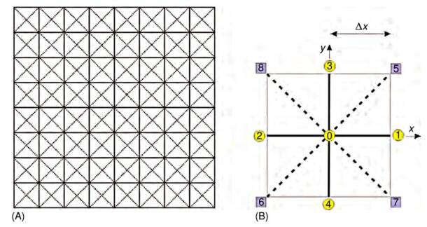
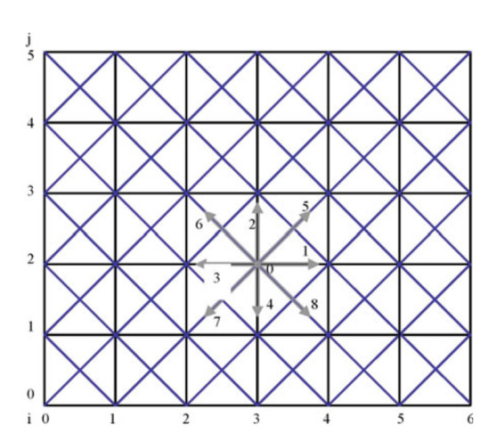
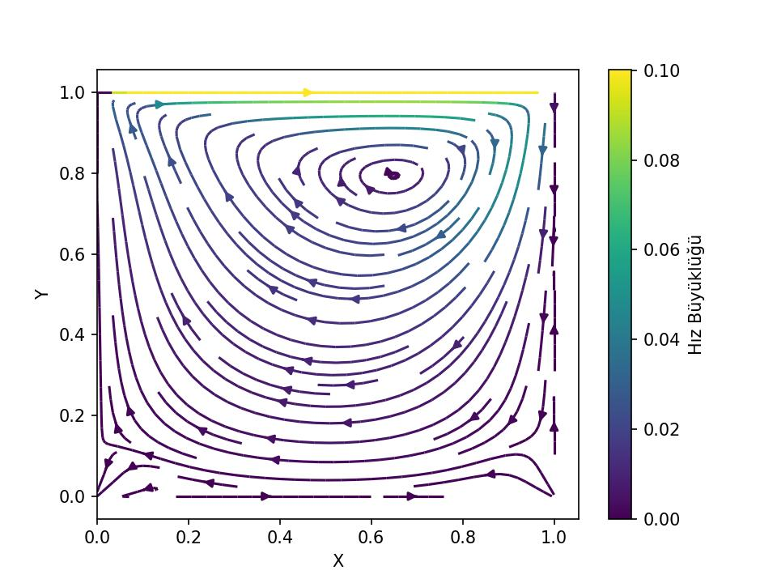

Bu yöntemde bir sıvı veya gazın sanal parçacıklardan oluştuğu varsayılır ve bu sıvı parçacıkları bir simülasyon bölgesinde hareket edebilir, diğer sıvı parçacıklarıyla çarpışabilir. Simülasyon alanı bir örgü / ızgara sistemi olarak ele alınır ve sıvı parçacıkları düğümden düğüme hareket eder; yani bir bölge içinde serbestçe hareket edemezler. Bu yöntemin moleküler dinamik yöntemine kıyasla en önemli farkı ızgara Boltzmann yönteminin sıvı parçacıklarının konumlarını ve hızlarını değil, parçacıkların hız dağılım fonksiyonunu kullanarak hesap yapmasıdır [3, sf. 24].
Bir diğer sınırlama hareket yönleri üzerinde yapılmıştır. Aşağıdaki şekil iki boyutlu bir sistem için ızgara Boltzmann yöntemi şekillenmiş. (A), bir simülasyon bölgesinin ızgara sistemine bölündüğünü göstermektedir. (B) ise birim kare ızgara hücresinin büyütülmüş halidir. Moleküllerin grupları veya kümeleri olarak ele alınan sanal sıvı parçacıklarının yalnızca komşu düğümlere hareket etmesine izin verilir, daha uzak düğümlere değil. Yani 0 düğümündeki sıvı parçacıklarının bir sonraki zaman adımında orada kalmasına ya da 1, 2, .., 8 numaralı düğümlere hareket etmesine izin verilir. Bu hareket kısıtlaması hareket hızını da standardize eder ve basitleştirir. 1, 2, 3 ve 4 numaralı düğümlere hareket eden sıvı parçacıklarının \(c = \Delta x / \Delta t\) hızı olacaktır, 5, 6, 7 ve 8 numaralı düğümlere hareket edenlerin ise \(\sqrt{2}c\) hızına sahip olmalıdır; burada \(\Delta x\) en yakın iki düğüm arasındaki ızgara aralığı ve \(\Delta t\) simülasyonlar için zaman aralığıdır. \(\sqrt{2}c\) değeri, (B)’deki köşegen mesafenin \(\sqrt{\Delta x^2 + \Delta x^2} = \sqrt{2}\Delta x\) olduğu ve buradaki hızın \(\sqrt{2}\Delta x / \Delta t\), yani önceki \(c\)’nin \(\sqrt{2}\) katı olacağı gerçeğinden hesaplanabilir.

Bu yöntemin gerekli denklemlerini türetmeye başlayalım. Daha önce [1]’de Boltzmann taşınım denkleminin şu şekilde olduğunu gördük:
\[\frac{\partial f}{\partial t} + c \cdot \nabla f = \Omega\]
\(\Omega\), moleküller hareket ettikten sonra gerçekleşebilecek çarpışmaları temsil eder; \(dr\, dc\) aralığındaki molekül sayıları arasındaki önce ve sonra arasındaki net farkı yakalar.
Hiç çarpışma olmasaydı, \(f()\) bağlamında önceki sayım sonraki sayımla tamamen aynı olurdu ve aralarındaki fark sıfır olurdu. Bunun olmadığı durumlarda sıfırdan farklı bir \(\Omega\)’ya ihtiyaç duyarız. Bu, \(\Omega\)’nın hesaplanmasının kolay olduğu anlamına gelmez. Gerçek bir çarpışma sayımı sistemdeki tüm olası çarpışmaları hesaba katmak zorunda olduğundan hesaplamak güçtür. Ancak çarpışma operatörünü çözümün sonucunda önemli bir hata ortaya çıkarmadan basit bir hesaplamayla yaklaşık olarak ifade etmek mümkündür [2, sf. 28].
\(\Omega\)’yı yaklaşık olarak ifade edebilmek için BGK yaklaşımı adı verilen bir yöntem geliştirilmiştir. BGK kaba ama zekice bir basitleştirmedir: tüm çarpışmaları hesaplamak yerine şu soruyu sorar: “Mevcut dağılım denge durumundan ne kadar uzakta ve ne kadar hızlı dengeye doğru meyili var?” Bu şu sonucu verir:
\[\Omega = \frac{1}{\tau}(f^{eq} - f)\]
burada \(f^{eq}\), Maxwell-Boltzmann dağılımıdır — [1]’de türettiğimiz denge dağılımı. Fiziksel fikir şudur: bir gazı yeterince uzun süre kendi haline bırakırsanız, çarpışmalar onu bu denge durumuna yönlendirir. Dolayısıyla \(f^{eq}\), \(f\)’nin ulaşmaya çalıştığı yeri temsil eder. Hatırlamak icin \(f^{eq}\) formülünü tekrar verelim,
\[f^{eq} = \left(\frac{m}{2\pi k_B T}\right)^{3/2} \exp\left(-\frac{m|c-u|^2}{2k_BT}\right)\]
Birçok açıdan BGK modeli, sistemin durumunu fark terimi \((f^{eq} - f)\) aracılığıyla “algılar”. \(f^{eq}\) doğrudan yerel, gerçek zamanlı makroskopik özelliklerden (\(\rho\) ve \(u\)) hesaplandığından, sıvının tam anlamıyla oraya meyillendirilmiş olma durumunda bulunması gereken matematiksel durumu temsil eder.
Sıvı zaten denge durumundaysa \(f = f^{eq}\), yani \(\Delta f = 0\). Model, hiçbir düzeltmeye gerek olmadığını algılar.
\(f\) ile \(f^{eq}\) birbirinden uzaklaşır ve \(\Delta f\) büyürse, bu çarpışmaların olduğu anlamına gelir; bu fark, bir kontrol sistemindeki hata sinyali gibi algılanır moleküler sınır dışına ne kadar çıktığını tam olarak ölçer.
Sapma bu çıkarma işlemiyle algılandıktan sonra, BGK operatörü bu değeri sistemi değiştirmek için hemen kullanır:
\[\Omega = \frac{1}{\tau}(f^{eq} - f)\]
Bu hata sinyalini \(\frac{1}{\tau}\) meyillendirme / gevşeme faktörüyle çarpar ve pasif bir ölçümü aktif bir geri yükleyici kuvvete dönüştürür.
Belirli bir hızda hareket eden çok fazla molekül varsa (\(f > f^{eq}\)), terim negatif olur ve çarpışma adımı o yöndeki mevcudiyeti azaltır.
Çok az molekül varsa (\(f < f^{eq}\)), terim pozitif olur ve çarpışma adımı o yöndeki mevcudu artırır.
Değişiklik her zaman sapmayı doğrudan orantılıdır. Bir düğüm doğal denge durumundan ne kadar uzaksa, onu yeniden dengeye sokmak için değiştirme adımı o kadar agresif hale gelir. Bu, kendi kendini düzenleyen matematiksel bir motordur: yüksek bozulma, büyük bir düzeltici çarpışma tepkisini tetiklerken, sakin ve dengelenmiş bir akış tamamen değişmeden geçer.
Bir not olarak belirtmek gerekir ki yukarıda açıklanan şema özünde doğrusal bir meyillendirme / gevşeme modelidir; Newton’un soğuma yasası \(dT/dt = -(T - T_\infty)/\tau\) ile aynı matematiksel yapıya sahiptir.
Denge dağılımını daha kolay hesaplanabilir hale getirmek için üzerinde bazı işlemler yapmamız gerekiyor. Gaussian \(\exp(-|c|^2/2RT)\), ayrık bir ızgara için çeşitli nedenlerle sorunludur:
Sürekli \(c\) için tanımlanmıştır
Hiçbir zaman tam olarak sıfıra eşit olmadığından sonlu sayıda yön bağlamında budanamaz (truncate).
Simülasyonda tekrar tekrar değerlendirilmesi pahalıdır
Bunu aşağıdaki adımlarla çözebiliriz, \(f^{eq}\) denklemini biraz masajlayarak onu farklı bir forma çevirelim.
\[ f^{eq} = \frac{\rho}{(2\pi RT)^{D/2}} \exp\left(-\frac{(c-u)^2}{2RT}\right) \]
Üsteldeki kareyi açalım,
\[ = \frac{\rho}{(2\pi RT)^{D/2}} \exp\left(-\frac{c \cdot c - 2c \cdot u + u \cdot u}{2RT}\right) \]
Üstteki \(c-u\) kullanımı hızı iki bileşene ayırıyor. Bu bilisenlerden birisi \(u\) ile belirtilen genel / global / toptan (bulk) hızdır, diğeri mikro seviyedeki \(c\) hızıdır. 9 tane yön altında incelenen hız \(c\) olacaktır, ve bu hız makro seviyedeki \(u\)’dan arta kalan dinamik olarak incelenir, nihai dağılım formülüne verilen \(c-u\) olur.
Üstel \(\exp\)’yi iki blok halinde alalım,
\[ = \frac{\rho}{(2\pi RT)^{D/2}} \exp\left(-\frac{c \cdot c}{2RT}\right) \exp\left(\frac{2c \cdot u - u \cdot u}{2RT}\right) \tag{1} \]
Üstel fonksiyon bir Taylor serisi kullanılarak açılabilir, \(\exp\) için standart açılımı hatırlarsak,
\[\exp(x) = 1 + x + \frac{x^2}{2!} + \frac{x^3}{3!} + \cdots \tag{2}\]
Taylor açılımını ikinci üstel üzerinde uygulayalalım,
\[ f^{eq} = \frac{\rho}{(2\pi RT)^{D/2}} \exp\left(-\frac{c \cdot c}{2RT}\right) \left( 1 - \frac{-2c \cdot u + u \cdot u}{2RT} + \frac{(-2c \cdot u + u \cdot u)^2}{4R^2T^2} + \cdots \right) \tag{3} \]
burada parantez içindeki ikinci terim (2)’deki \(x\) terimidir, üçüncü terim \(x^2/2!\) terimidir; \(O(u^3)\) terimleri atılır ve \((-2c \cdot u + u \cdot u)^2 \approx 4(c \cdot u)^2\) sadeleştirmesi yapılır (çünkü kare içindeki \(u \cdot u\) terimi zaten \(O(u^2)\) mertebesinde olduğundan bütün ifadeyi \(O(u^4)\) yapar), bu da (3)’ten (4)’e geçişi sağlar. Devam edelim, ıkinci üstelin Taylor açılımı yapılarak \(O(u^3)\) terimleri atıldığında:
\[ f^{eq} = \frac{\rho}{(2\pi RT)^{D/2}} \exp\left(-\frac{c \cdot c}{2RT}\right) \left(1 + \frac{2c \cdot u - u \cdot u}{2RT} + \frac{(c \cdot u)^2}{2R^2T^2}\right) \tag{4} \]
\(W(c) = \frac{1}{(2\pi RT)^{D/2}} \exp\!\left(-\frac{c \cdot c}{2RT}\right)\) ve \(RT = c_s^2\) yerine koyarak:
\[ f^{eq} = \rho W(c) \left(1 + \frac{2c \cdot u - u \cdot u}{2c_s^2} + \frac{(c \cdot u)^2}{2c_s^4}\right) \]
\(W(c) \to w_i\) ızgara yönü \(i\) boyunca ayrıklaştırılarak:
\[ f^{eq}_i = \rho w_i \left(1 + \frac{2c_i \cdot u - u \cdot u}{2c_s^2} + \frac{(c_i \cdot u)^2}{2c_s^4}\right) + O(u^2) \tag{5} \]
Izgara Boltzmann Yöntemi’nde “ızgara yönleri”, sanal parçacıkların hareket etmesine ve çarpışmasına izin verilen sabit, ayrık yolları temsil eder. Sürekli fonksiyon \(f(x, c, t)\), sonsuz hız yelpazesi, sonsuz küçük aralıklarda parçacık yoğunluğunu izlerken, LBM bunu hız uzayını \(i\) alt indisiyle gösterilen sonlu bir vektörler kümesine ayrıştırarak basitleştirir. Sonuç olarak, sürekli \(f\), bir ayrık dağılım fonksiyonları kümesine, \(f_i\)’ye bölünür; burada her \(f_i(x, t)\), \(x\) konumundaki \(t\) zamanında \(i\) kafes yönünde hareket eden parçacıkların özgül yoğunluğunu temsil eder.
Örneğin, ilk figürdeki yaygın \(D2Q9\) modelinde (2 boyut, 9 hız), \(i\) indisi 0’dan 8’e kadar uzanır. Burada \(f_0\) durağan parçacıkları temsil eder, \(f_1\)’den \(f_4\)’e kadar olanlar \(c\) hızında en yakın komşulara yatay ve dikey yönde hareket eden parçacıkları temsil eder ve \(f_5\)’ten \(f_8\)’e kadar olanlar \(\sqrt{2}c\) hızında bir sonraki en yakın komşulara çapraz hareketleri izler. Bu ayrıştırma, karmaşık bir diferansiyel denklemi son derece verimli, yerelleştirilmiş cebirsel hesaplamalara dönüştüren şeydir.
Devam edelim, \(f^{eq}_i\), Taylor açılımlı Maxwell-Boltzmann (3.4) ile \(\rho\) ve \(u\) kullanılarak hesaplanır:
\[ f^{eq}_i = w_i \rho \left(1 + \frac{c_i \cdot u}{c_s^2} + \frac{(c_i \cdot u)^2}{2c_s^4} - \frac{u \cdot u}{2c_s^2}\right) \]
Yani Taylor açılımı, üsteli ayrık bir ızgara üzerinde ele alınabilir olan \(c \cdot u\) cinsinden bir polinomla değiştirdi. Ardından yapılan iki yerine koyma işlemi de iyi oldu,
\(W(c) = \exp(-c \cdot c / 2RT)(2\pi RT)^{-D/2}\), Gaussian’ı bir ağırlığa absorbe eder — ve bu ağırlık yalnızca \(c\)’nin büyüklüğüne bağlı olduğundan, her ayrık ızgara yönü \(i\) için bir kez hesaplanan sabit bir \(w_i\) sabitine dönüşür
\(RT = c_s^2\), termodinamiği ızgara ses hızına bağlar
Dolayısıyla (5)’te ayrıklaştırmanın ardından \(f^{eq}_i\), sabit katsayıları \(w_i\), \(c_i\), \(c_s\) olan — hepsi önceden hesaplanabilir — \(u\) cinsinden yalnızca bir polinomdur. LBM’yi hesaplamsal açıdan bu kadar çekici yapan da budur.
\(O(u^2)\) budaması aynı zamanda yaklaşımın sınırlarını da bize söyler: üstte gösterilen LBM yaklaşıksallığı bir düşük Mach sayısı yaklaşımıdır. \(|u|/c_s\)’nin küçük olmadığı yüksek hızlı akışlar için daha yüksek mertebeden terimler gerekecektir.
Şimdi bir Taylor açılımına daha ihtiyaç duyacağız. Bu tekniği \(f(..)\) için kullanmak istiyoruz.
Çok boyutlu durumda \(f(x_1, x_2, \ldots)\)’yi \(a_1, a_2, \ldots\) etrafında açmak için şu genel açılımı hatırlayabiliriz,
\[ f(x_1, x_2, \ldots) \approx f(a_1, a_2, \ldots) + \frac{\partial f}{\partial x_1}(x_1 - a_1) + \frac{\partial f}{\partial x_2}(x_2 - a_2) + \cdots \]
Bizim uygulamamız için küçük fark \(x\), \(t\) etrafında açılım yapmak istememizdir; bir sonraki durum \(x + c_i \Delta t\) ve \(t + \Delta t\)’dir. Bu nedenle yukarıda görülen \(x_1 - a_1\) ve \(x_2 - a_2\) türü ifadeleri şu şekilde yeniden belirtmemiz gerekir:
Artık Taylor açılımı şu hale gelir:
\[ f_i(x + c_i \Delta t, t + \Delta t) \approx f_i(x, t) + \frac{\partial f_i}{\partial x} c_i \Delta t + \frac{\partial f_i}{\partial t} \Delta t \tag{6} \]
Ya da \(\nabla\) gösterimini kullanarak şunu da söyleyebiliriz:
\[f_i(x + c_i \Delta t, t + \Delta t) = f_i(x, t) + \frac{\partial f_i}{\partial t} \Delta t + \nabla f_i \cdot c_i \Delta t + O(\Delta t^2)\]
Her iki taraftan \(f_i(x, t)\)’yi çıkarır ve tüm denklemi \(\Delta t\)’ye böleriz:
\[\frac{f_i(x + c_i \Delta t, t + \Delta t) - f_i(x, t)}{\Delta t} = \frac{\partial f_i}{\partial t} + c_i \cdot \nabla f_i + O(\Delta t)\]
\(\Delta t \to 0\) limitini alırsak, yüksek mertebeden \(O(\Delta t)\) terimleri yok olur. Geriye şu kalır:
\[= \frac{\partial f_i}{\partial t} + c_i \cdot \nabla f_i\]
Bu form tanıdık geliyor mu? Elbette! Bu, daha önce türettiğimiz Boltzmann taşınım denkleminin kendisidir ve bunun neye eşit olduğunu biliyoruz:
\[\frac{\partial f_i}{\partial t} + c_i \cdot \nabla f_i = \frac{1}{\tau}(f^{eq}_i - f_i) \tag{7}\]
Dolayısıyla (6)’daki sol tarafın ayrıklaştırılması bize iki şey sağladı. Birincisi algoritmanın nasıl ilerlediğini gösterdi, şöyle:
\[f_i(x + c_i \Delta t, t + \Delta t) = f^*_i(x, t)\]
Algoritmik açıdan bu saf bir bellek kopyalama işlemidir. Ardından \(i\) yönü için \(c_i\) hız vektörüne bakılır, az önce \(x\) düğümünde hesaplanan çarpışma sonrası \(f^*_i\) değeri alınır ve bir sonraki zaman adımı için tam olarak \(x + c_i \Delta t\) konumundaki komşu düğümde \(i\) yönüne karşılık gelen bellek yuvasına yazılır.
Denklem (6)’nın sol tarafından elde ettiğimiz ikinci kazanım, bunun Boltzmann taşınım denklemine eşit olduğunu görmekti; dolayısıyla (7)’nin sağ tarafı da doğru olacaktır. Çarpışma matematiğini hesaplamak için bu gerçeği kullanabiliriz: her \(i\) yönü için düğümün mevcut \(\rho\) ve \(u\) değerlerini polinom formülüne koyarak \(f^{eq}_i\) denge değerini hesaplarız, \(f_i\)’den \(f^{eq}_i\)’yi çıkarırız, bunu \(\frac{\Delta t}{\tau}\) (gevşeme faktörü) ile çarparız ve elde edilen sonucu orijinal \(f_i\)’den çıkarırız.
Altta yazacağımız simülasyonda kapak güdümlü alan / oyuk (lid-driven cavity) içindeki sıvı akış problemini çözmeye uğraşacağız. Problem tanımı şöyle: Bir oyuğun üstündeki kapak sabit bir hızda sürekli soldan sağa gidiyor. Bu gidiş sırasında kapak alttaki su ile temasta olduğu için temas edilen en üst seviyedeki suyu soldan sağa doğru itecektir. Oyuk içindeki sağ, sol ve en alt kısmındaki duvarlar sabittir, tabii hareket halindeki su onlara çarpınca geri sekme olur, bu sekmenin diğer su molekülleri ile olan etkileşimi vs göz önüne alınmalıdır, tüm bu mekaniğin hesaplanması gerekir.
Kodlama için kullanılan ızgara D2Q9 ızgarası olacak, yani iki boyuttayız, ve hareketsizlik dahil olmak üzere 9 tane yön var. Bu yönleri ve onların numaralandırılmasını alttaki şekilde görüyoruz.

Sabit hızda kapak hareketin altındaki suya yapacağı sabit etkiyi sisteme dahil etmenin en rahat yolu \(u\) üzerinden olacaktır. Daha önce \(u\) değişkeninin global hareketi temsil ettiğini söylemiştik. O zaman, mesela sisteme etki edecek bir “rüzgar” ya da bu örnekteki gibi sabit hızdaki bir sıvı hareketini \(u\) ile yaparız. Hesapsal olarak \(u\)’yu temsil eden matrisin en üst satırına bu sabit hız enjekte edilebilir.
Sağ, sol, alt duvarları sabittir, bu duvarlara dokunan \(u\) noktalarında hız sıfırlanmalıdır, ayrıca orada momentumun her zaman sıfır olmalısı da gerekir, buna sıvı mekaniğinde kaymamazlık koşulu / kayma-yok (no-slip condition) ismi veriliyor. Bu kaymazlık koşulunun momentum kismini elde etmek için de çarpısma sonrasi yönsel yoğunluğu (D2Q9’daki 9 tane yönden bahsediyoruz) tamamen tersine çevirmek gerekir. Dikkat: Pong oyunu usulü topun duvardan bir açıyla sekmesinden bahsetmiyoruz, alt sola doğru olan gidişi tam tersine, üst sağa çevirmekten bahsediyoruz (Pong olsaydı “sekme” sonrası gidiş sağ alta doğru olurdu).
Not: Hareket etmeyen duvara temas eden ince sıvı tabakasının hızının sıfırlanması gerçekçi bir seçimdir, duvarlar pürüzsüz değildir, pek çok girintisi çıkıntısı olan yapılardır, bu noktalara temas eden sıvı moleküllerinin oraya yapıştığı deneylerde saptanmıştır.
Hız yönünün tersini çevrilmesi gerekliliğini momentum muhafazasından türetebiliriz. Bir duvar düğümünde, \(f_i\)’leri gelen ve giden popülasyonlara ayıralım.
\(f_i^+\) — \(\mathbf{e}_i\)’sı duvardan uzaklaşan yoğunluk
\(f_i^-\) — \(\mathbf{e}_i\)’sı duvara doğru işaret eden yoğunluk
ki \(\mathbf{e}_i\) vektörleri LBM izgara yapısının tanımladığı yönlerdir. Akış sonrasında, \(f_i^-\) molekülleri duvara henüz ulaşmıştır. \(f_i^+\) yoğunluğu ise bilinmeyendir — bunların sınır koşulu tarafından belirlenmesi gerekir. Kayma-yok kısıtlaması şunu söyler:
\[\sum_{i^+} f_i^+ \mathbf{e}_i^+ + \sum_{i^-} f_i^- \mathbf{e}_i^- = 0\]
Üstteki formül alttakinin açılmış hali, çünkü LBM’de \(\mathbf{x}\) düğümündeki momentum şöyledir:
\[\rho \mathbf{u}(\mathbf{x}, t) = \sum_i f_i(\mathbf{x}, t)\, \mathbf{e}_i\]
Devam edelim, sıfıra eşit olmayı sağlamanın en basit yolu, her gelen \(i^-\) yönü için şunu ayarlamaktır:
\[f_{\bar{i}}^+ = f_i^-\]
burada \(\bar{i}\), \(i\)’nin karşı yönüdür, yani \(\mathbf{e}_{\bar{i}} = -\mathbf{e}_i\). O halde:
\[\sum_{i^-} f_{\bar{i}}^+ \mathbf{e}_{\bar{i}}^+ + \sum_{i^-} f_i^- \mathbf{e}_i^- = \sum_{i^-} f_i^- (-\mathbf{e}_i^-) + \sum_{i^-} f_i^- \mathbf{e}_i^- = 0 \]
Her çift tam olarak birbirini iptal eder. Bu geri-sekme kuralıdır, momentum toplamının sıfır olması talebi doğrultusunda doğrudan elde edilir.
A = np.array([[0,0,0],[0,1,1],[0,0,0]])
print (A)
A = np.roll(np.roll(A[:, :], -1, axis=0), 0, axis=1)
print (A)
A = np.roll(np.roll(A[:, :], 0, axis=0), 1, axis=1)
print (A)[[0 0 0]
[0 1 1]
[0 0 0]]
[[0 1 1]
[0 0 0]
[0 0 0]]
[[1 0 1]
[0 0 0]
[0 0 0]]nx, ny = 101, 101
f = np.zeros((nx, ny, 9))
ux = np.zeros((nx, ny))
uy = np.zeros((nx, ny))
rho = np.ones((nx, ny))
w = np.array([1/9, 1/9, 1/9, 1/9, 1/36, 1/36, 1/36, 1/36, 4/9])
cx = np.array([1, 0, -1, 0, 1, -1, -1, 1, 0])
cy = np.array([0, 1, 0, -1, 1, 1, -1, -1, 0])
xl, yl = 1.0, 1.0
dx = xl / (nx - 1)
dy = yl / (ny - 1)
x = np.linspace(0, xl, nx)
y = np.linspace(0, yl, ny)
uo = 0.10
alpha = 0.1
Re = uo * (ny - 1) / alpha
omega = 1.0 / (3.0 * alpha + 0.5)
tol = 1e-4
error = 10.0
erso = 0.0
count = 0
# Kapak hizi
ux[:, -1] = uo
def collision(f, u, v, rho):
t1 = u**2 + v**2 # (nx, ny)
# t2[k] = ux*cx[k] + uy*cy[k] her k yonu icin
t2 = (ux[:, :, np.newaxis] * cx
+ uy[:, :, np.newaxis] * cy) # (nx, ny, 9)
feq = (rho[:, :, np.newaxis] * w
* (1.0 + 3.0*t2 + 4.5*t2**2
- 1.5*t1[:, :, np.newaxis]))
f = (1.0 - omega) * f + omega * feq
return f
def stream(f):
# Alttaki MATLAB circshift([+1,0]) cagrisinin benzeridir
# MATLAB: circshift(A, [r,c]) tum satirlari r kadar, kolonlari c kadar kaydirir
shifts = [(1,0),(0,1),(-1,0),(0,-1),(1,1),(-1,1),(-1,-1),(1,-1)]
for k, (sr, sc) in enumerate(shifts):
f[:, :, k] = np.roll(np.roll(f[:, :, k], sr, axis=0), sc, axis=1)
return f
def boundary(f, uo):
# --- sol duvar
f[0, :, 0] = f[0, :, 2]
f[0, :, 4] = f[0, :, 6]
f[0, :, 7] = f[0, :, 5]
# --- sag duvar
f[-1, :, 2] = f[-1, :, 0]
f[-1, :, 6] = f[-1, :, 4]
f[-1, :, 5] = f[-1, :, 7]
# --- alt duvar
f[:, 0, 1] = f[:, 0, 3]
f[:, 0, 4] = f[:, 0, 6]
f[:, 0, 5] = f[:, 0, 7]
# Üst sınır (top boundary) hareket eden kapak (Zou/He usulü)
# hesap iç x düğümleri üzerinden vektorize edilmiştir (index 1..nx-2)
i = slice(1, nx - 1)
rhon = (f[i, -1, 8] + f[i, -1, 0] + f[i, -1, 2]
+ 2.0 * (f[i, -1, 1] + f[i, -1, 5] + f[i, -1, 4]))
f[i, -1, 3] = f[i, -1, 1]
f[i, -1, 7] = f[i, -1, 5] + rhon * üo / 6.0
f[i, -1, 6] = f[i, -1, 4] - rhon * üo / 6.0
return f
def ruv(f):
rho = f.sum(axis=2)
# Üst satırdaki yoğunluğu düzelt (hareket eden kapak için denge
# dışı dışdeğerleme -extrapolation- yap)
rho[:, -1] = (f[:, -1, 8] + f[:, -1, 0] + f[:, -1, 2]
+ 2.0 * (f[:, -1, 1] + f[:, -1, 5] + f[:, -1, 4]))
ux = (f[:, :, 0] + f[:, :, 4] + f[:, :, 7]
- f[:, :, 2] - f[:, :, 5] - f[:, :, 6]) / rho
uy = (f[:, :, 1] + f[:, :, 4] + f[:, :, 5]
- f[:, :, 3] - f[:, :, 6] - f[:, :, 7]) / rho
return rho, ux, uy
while error > tol:
f = collision(f, ux, uy, rho)
f = stream(f)
f = boundary(f, uo)
rho, ux, uy = ruv(f)
count += 1
ers = np.sum(ux**2 + uy**2)
error = abs(ers - erso)
erso = ers
# Post-processing (mirrors result.m)
mid_x = (nx - 1) // 2
mid_y = (ny - 1) // 2
um = ux[mid_x, :] / uo # centreline u-velocity vs y
vm = uy[:, mid_y] / uo # centreline v-velocity vs x
fig, ax = plt.subplots()
X, Y = np.meshgrid(x, y)
speed = np.sqrt(ux**2 + uy**2)
strm = ax.streamplot(X, Y, ux.T, uy.T, color=speed.T, cmap='viridis', linewidth=1.5)
fig.colorbar(strm.lines, label=u'Hız Büyüklüğü')
ax.set_xlabel("X"); ax.set_ylabel("Y")
fig.savefig("compscieng_bpp43lbm_02.jpg", dpi=150)
[devam edecek]
Kaynaklar
[1] Bayramli, Fizik - Sıvı ve Gaz Mekaniği - 2
[2] Mohamad, Lattice Boltzmann Method Fundamentals and Engineering Applications with Computer Codes
[3] Satoh, Introduction to Practice of Molecular Simulation